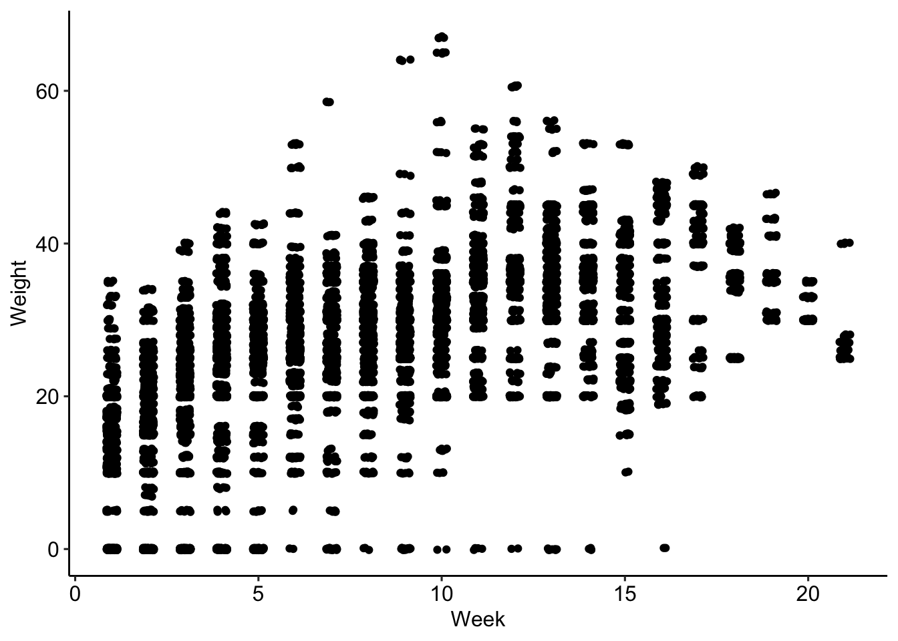

| Effect | Estimate (Mins) | 95% CI |
|---|---|---|
| Footwear index | ||
| 1 | 9.7 | 9.6, 9.9 |
| 2 | 11 | 10, 11 |
| 3 | 11 | 11, 11 |
| Weight | 0.07 | 0.06, 0.07 |
| Abbreviation: CI = Confidence Interval | ||
Descriptive Statistics
| Number of seasons | 10 |
| Number of students | 129 |
| Number of reps | 11,813 |
| Reps per student, average | 91.6 |
| Number of workouts | 1,667 |
| Workouts per student, average | 12.9 |
| Number of workouts with recorded pack weights | 1,659 |
| Average pack weight, pounds | 27 |
| Number of workouts with recorded footwear | 1,567 |
| Average pace, minutes per rep | 12.6 |
| Fastest pace, minutes per rep | 4.67 |
| Slowest pace, minutes per rep | 32 |
Figures
The following boxplot illustrates the typical pace per rep, across all students and workouts:
Across sequential reps, the average pace varied from 12 to 13.1 minutes.

The following scatterplot illustrates the typical pack weight by week of the season, across all years:
Pack weights tended to increase gradually throughout the season; however, there is a noticeable step-up in weights after Week 10.

Exploratory Analyses
Across all recorded reps and accounting for pack weight, I’m interested in the average difference between footwear types in terms of pace. The following footwear types were encoded numerically:
- Running shoes
- Hiking boots
- Mountaineering boots
To estimate the difference in pace associated with footwear, I use linear regression. For reps \(i=1, ..., N\), I treat \(y_i\) as the pace (in minutes), \(x_i\) as the numerical index of footwear (in the list above), and \(z_i\) as pack weight (in pounds). Thus, we have:
\[ y_i=\alpha[x_i]+\beta z_i + \epsilon_i \] where \(\alpha[1],..., \alpha[3]\) and \(\beta\) are estimated via least-squares.
I fit the model and examine the regression coefficient summaries below:
Interpreting the regression coefficients, an additional five pounds of pack weight was associated with a slowdown in pace of 0.327 minutes; this equates to roughly 20 seconds per repetition. Accounting for pack weight, the difference between mountaineering boots and running shoes was a slowdown in pace of 1.35 minutes.
Discussion
Across the population of mountaineering school students, the average pace of climbing one rep of the Cathedral stairs was 12.6 minutes, with a vertcial elevation gain of about 132 meters per repetition.
Any rep measured in minutes is easily expressed as the number of meters climbed in one hour, assuming a constant pace. The formula for this conversion is below:
\[ \text{Meters per hour (mph)}=60\times \frac{132}{\text{Minutes per rep}} \]
The average pace for the students was 629 mph. A 2004 study of hikers found a typical climbing pace of 317 mph in the Austrian Alps, with variation between 180 and 480 mph. Thus, the typical climbing pace observed in this dataset was exceptionally fast by alpine standards, but also occurred in a controlled training environment near sea-level.
The study was published in Research in Sports Medicine, and titled “Exercise Capacity for Mountaineering: How Much Is Necessary?”, by Martin Burtscher.
Additionally, student climbing paces exhibited negative responses to heavier footwear and pack weights, as would be expected given the endurance aspect of the training exercise. Extrapolating from the regression results in Table 1, an increase in pack weight from 20 to 30 pounds would be expected to slow the average student by 42 seconds per rep. In climbing terms, this would potentially slow the pace from 629 to 595 mph.
One noteworthy limitation of this analysis is that the results demonstrate average tendencies; however, it is likely that students responded differently to increased loads. Therefore a revised analysis ought to account for student-level heterogeneity in the efefcts of footwear and packweight. A multi-level model via Bayesian methods would offer means to address this limitation.